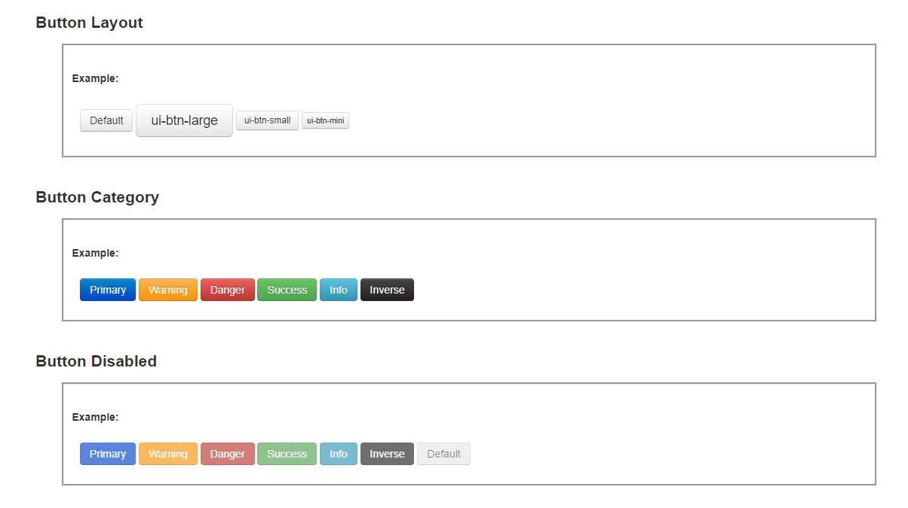

Custom UI Inputs.
Form inputs, button styles and compact control systems.
UI COMPONENT CUSTOMIZATION02 supplied screenshotsFrontend & UI Design
FINAL INTERFACE SHOWCASESmall components, deliberate detailsScroll for the full screenshot collection ↓

01 / DESIGN CONTEXTProject at
Project at
a glance.
A two-screen collection of reusable interface-control treatments, with an emphasis on consistent buttons, form fields and visual states.
02 / SELECTED SCREENSExplore the
Explore the
interfaces.
The screenshots below are presented as final design / interface views. Select any image to inspect it at full size; use the arrow keys to navigate.
03 / VISUAL FOCUSWhat the
What the
screens show.
Two references show button categories/states and example form input treatments.
Button variants and statesForm field treatmentReusable UI styling
Selected UI sections only. The complete interfaces and internal details are not shown to respect company and client confidentiality.